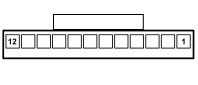

M001L BODY COMPUTER (DASHBOARD)
- Path
- Electrical equipment > 3 CONNECTORS > M INTERMITTENT AND TIMED ELECTRONIC DEVICES > M001 BODY COMPUTER > M001L BODY COMPUTER (DASHBOARD)
- Kind
- connector pinout (pin -> wire colour -> other end)
- Applies to
- all engines; all production periods; only with equipment: CONNECT
- Interactive page
- https://sloeber94.github.io/elrnDB-fPnd/en/#/169003412
Applies to: all engines; all production periods; only with equipment: CONNECT

Wiring | Colour |
|---|---|
NERO (black) |
Pin | Cable | Destination | |||
|---|---|---|---|---|---|
Sec.. | Colour | Node | Connect. | Pin | |
1 | 0,5 | LB (blue with white stripe) | 32 | ||
2 | 0,5 | NZ (black with violet stripe) | 12 | ||
3 | 0,5 | RV (red with green stripe) | 16 | ||
4 | 1,5 | RN (red with black stripe) | 7 | ||
5 | 0,5 | RG (red with yellow stripe) | 9 | ||
6 | 0,5 | HR (grey with red stripe) | 1 | ||
7 | 0,5 | AN (light blue with black stripe) | 26 | ||
8 | 0,5 | N (black) | 4 | ||
9 | 0,5 | GR (yellow with red stripe) | 7 | ||
Topics linked from this page (8)
- 20 FACIA
- B002 JUNCTION UNIT UNDER DASHBOARD
- C020B PASSENGER SIDE DASHBOARD EARTH (DASHBOARD)
- D021 DASHBOARD/AIR CONDITIONING-HEATER COUPLING
- D075 RADIO PHONE COUPLING
- D097E SHORT CIRCUITING COUPLING (DASHBOARD)
- M094A RADIO RECEIVER NODE (DASHBOARD)
- R010 MULTIPLE TESTER CONNECTION
Topics that link to this page (11)
- B002 JUNCTION UNIT UNDER DASHBOARD (DASHBOARD)
- C020B PASSENGER SIDE DASHBOARD EARTH (DASHBOARD)
- C020B PASSENGER SIDE DASHBOARD EARTH (DASHBOARD)
- C020B PASSENGER SIDE DASHBOARD EARTH (DASHBOARD)
- D021 DASHBOARD/AIR CONDITIONING-HEATER COUPLING (DASHBOARD)
- D075 RADIO PHONE COUPLING (DASHBOARD)
- D097E SHORT CIRCUITING COUPLING (DASHBOARD)
- D097E SHORT CIRCUITING COUPLING (DASHBOARD)
- M094A RADIO RECEIVER NODE (DASHBOARD)
- M094A RADIO RECEIVER NODE (DASHBOARD)
- R010 MULTIPLE TESTER CONNECTION (DASHBOARD)